The slide of the lecture is on the left, the same figure on the right, computed in the browser from the same data. The ▶ button moves the parameter step by step.
Stylised facts of financial returns · Conditional mean and conditional variance · The ARCH model · The GARCH(1,1) model · Estimation by maximum likelihood · GARCH in four markets and ARMA-GARCH models · Asymmetry and the leverage effect · Diagnostics and model choice · Variance forecasts and their evaluation · An application: VaR 1% from a GARCH model
Stylised facts of financial returns
Four markets, one pattern
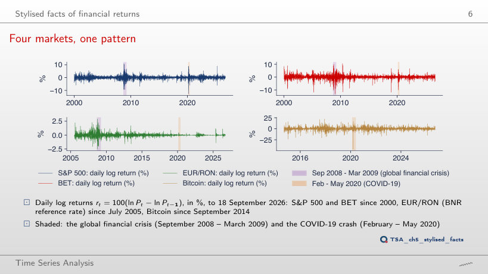
Answer
In 2017: 0.42%, followed by 2006 (0.63%) and 2005 (0.65%). From September 2008 to March 2009 the standard deviation was 3.52%, 8.3 times larger, and in February–May 2020 3.70% (8.8 times). For the EUR/RON the calmest year was 2024 (0.025%) and the most agitated 2008 (0.72%): the BNR kept the leu almost fixed in 2020, when equities went through their largest storm.
The sign is unpredictable, the size is not
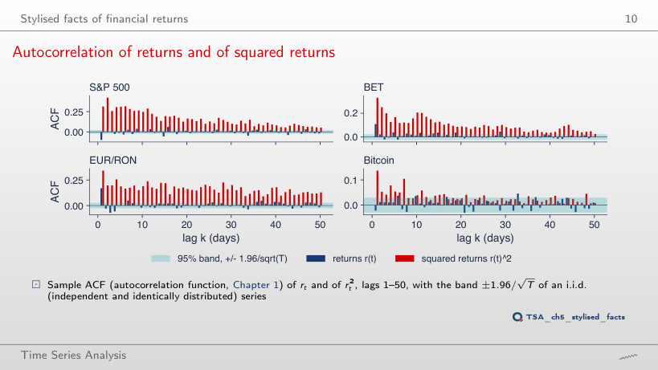
Answer
All 50 lie outside the band, and at lag 50 the autocorrelation is 0.127, against 0.053 for r²; at lag 1: 0.289 against 0.313. The absolute value is less dominated by a few extreme days than the square, so the memory of the size of returns shows even more clearly. The sign (r) stays almost unpredictable: 15 of 50 autocorrelations are outside the band, most of them small.
Conditional mean and conditional variance
The mean model leaves ARCH effects
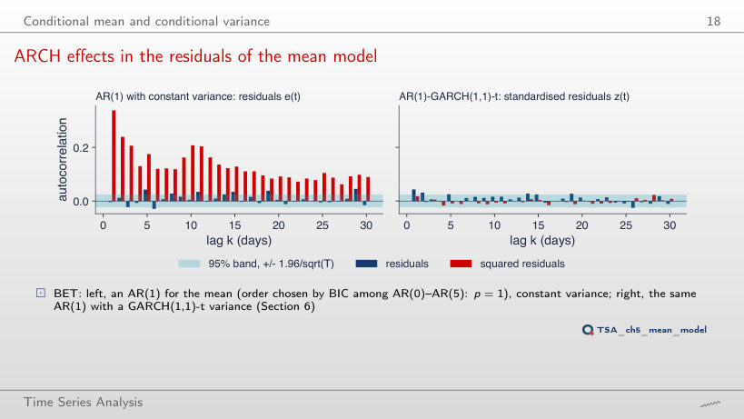
Answer
No. Q(10) of the residuals falls from 29.7 to 15.4 (p = 0.009), but Q(10) of the squares rises from 2496 to 2562, and ARCH-LM(5) stays around 1020 (for AR(1): n R² = 6664 × 0.1526 = 1017). A richer model for the mean removes the autocorrelation of the level, not that of the squares: the conditional variance needs a model of its own. On the right, the same residuals divided by the GARCH(1,1) volatility lose their ARCH effects for every p: Q(10) of ẑ² stays between 7.0 and 8.3 (p > 0.6).
The ARCH model
Simulated paths: i.i.d., ARCH(1) and GARCH(1,1)
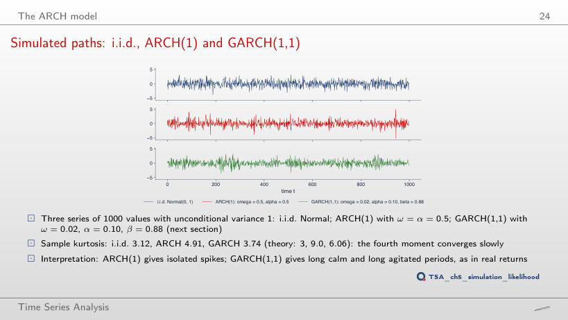
Answer
In theory the fourth moment does not exist (3α² = 1.47 ≥ 1, the threshold is α = 1/√3 = 0.577), so the kurtosis is infinite. The kurtosis of the 1000 simulated values is 11.24, and 34.9 at α = 0.9: a finite sample always has a finite kurtosis, so the sample value cannot show that the moment does not exist. At α = 0.5 theory gives 9.0 and the sample 4.91: the fourth moment converges slowly.
The GARCH(1,1) model
GARCH, EWMA and a rolling window in 2020
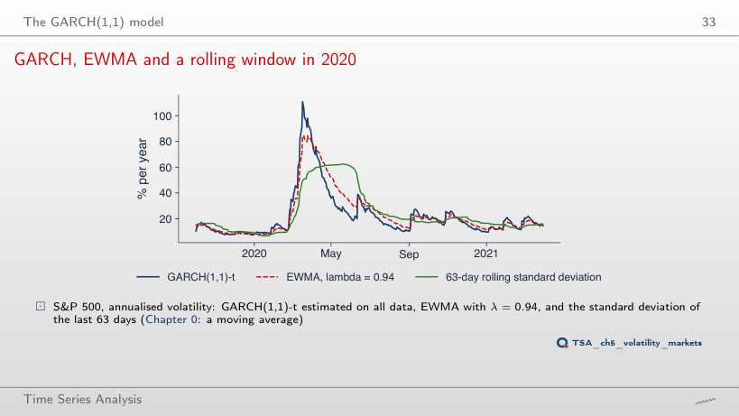
Answer
Lower: 67%, on 27 March 2020, against 85% on 25 March for λ = 0.94. With a larger λ the weight of yesterday’s return, 1 − λ, falls from 0.06 to 0.03, and the half-life of the weights rises from 11.2 to 22.8 days: the estimate reacts more slowly and comes down more slowly (37% on 30 June 2020, against 30%). With λ = 0.90 the peak is 103%, close to that of GARCH (111%), whose α = 0.123 is larger than 1 − λ = 0.06.
Estimation by maximum likelihood
The likelihood of ARCH(1)
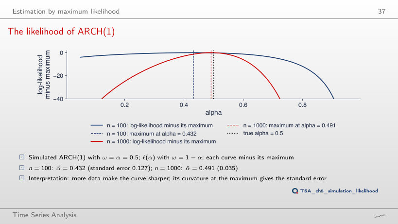
Answer
0.015 (α̂ = 0.516), against 0.035 for n = 1000: 2.3 times smaller, close to √5 = 2.24. The standard error falls with √n, because the log-likelihood is a sum of n terms and its curvature at the maximum grows in proportion to n.
The likelihood of GARCH(1,1)
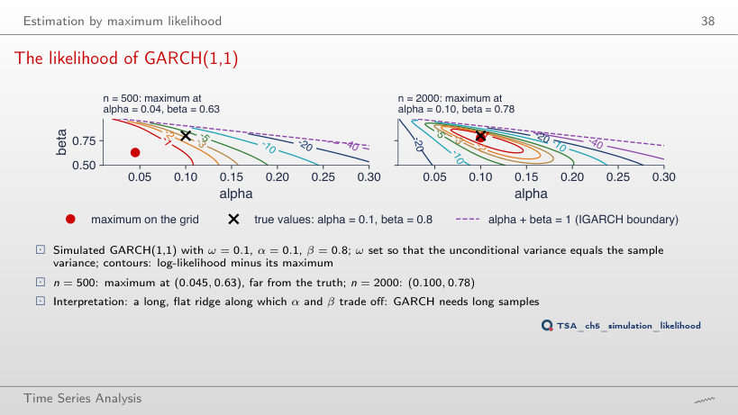
Answer
At (0.045, 0.90): α is still underestimated and β overestimated, along the same ridge on which α + β changes little. With n = 1500 the maximum is at (0.075, 0.82), with n = 3000 at (0.10, 0.81), with n = 5000 at (0.10, 0.82). α and β trade off: different pairs with the same persistence give almost the same likelihood, which is why GARCH needs long samples.
QQ plots of the standardised residuals
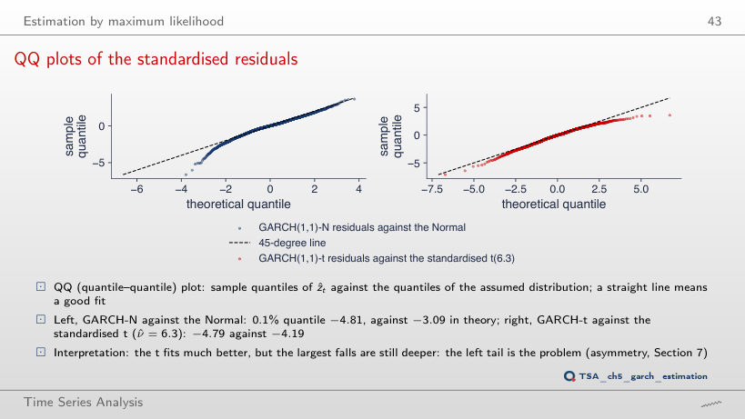
Answer
For ν ≈ 4.5 (−4.79), smaller than ν̂ = 6.26. But the t distribution is symmetric: with ν = 4.5 its 99.9% quantile is +4.79, while the sample one is only 2.93. The left tail of the residuals is heavier than the right one; a single ν cannot fit both, which is why the lecture also compares the skewed t distribution.
GARCH in four markets and ARMA-GARCH models
Conditional volatility: S&P 500 and BET
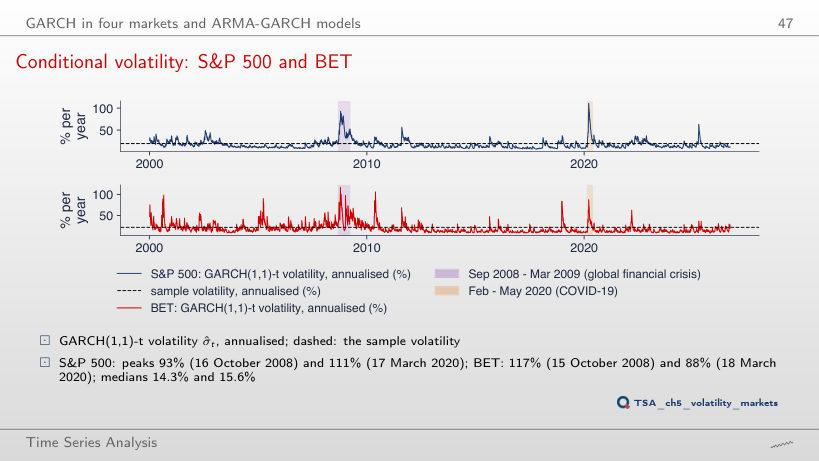
Answer
The peak rises from 111% to 140% and the median falls from 14.3% to 13.3%: with α = 0.245 and β = 0.750 the volatility reacts more strongly to every shock and comes back faster. For the BET the 2008 peak rises from 117% to 138%. The persistence, and so the long-run level, stays the same; the shape of the path changes. The estimated values (c = 1) are those that maximise the likelihood.
Conditional volatility: EUR/RON and Bitcoin
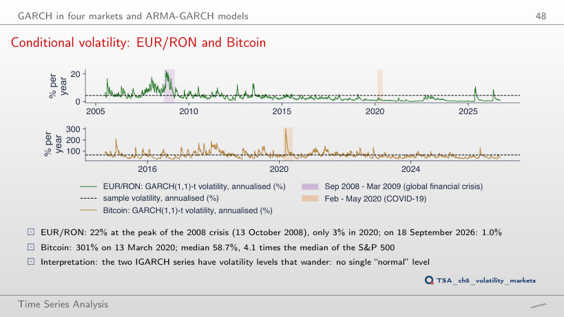
Answer
Yes: 218%, against 301% with the estimated α; the median rises from 58.7% to 66.6%. In an IGARCH too, α decides how far volatility jumps after a shock; α + β = 1 only decides that the shock does not die out. For the EUR/RON, with c = 0.5, the 2008 peak falls from 22% to 19%.
How long does a volatility shock last?
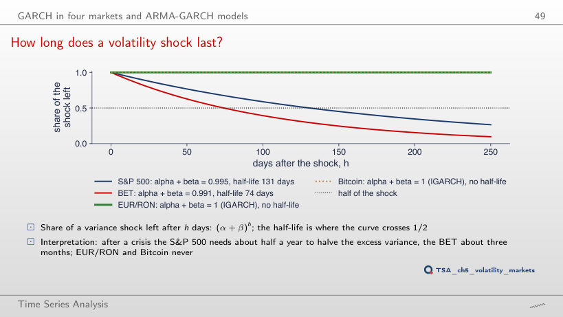
Answer
131: the unrounded estimated persistence is 0.99471, and ln 0.5 / ln 0.99471 = 130.7 days. Rounding to three decimals adds 7 days; for the BET, 0.99071 gives 74.3 days, rounded to 0.991 it gives 76.7. Rounded to 0.99, both give 69.0 days. Close to 1 the half-life depends strongly on the third decimal: compute it from the unrounded value.
Forecast intervals that breathe
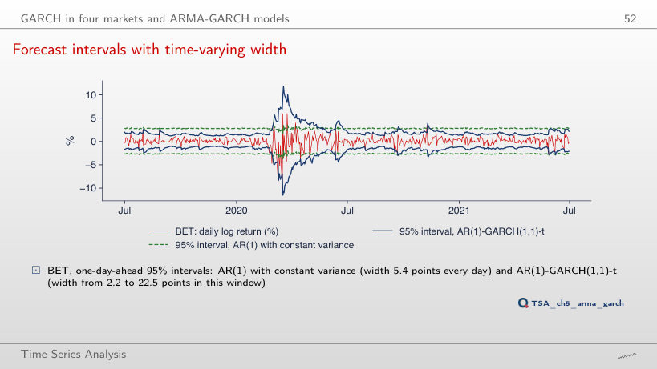
Answer
The constant interval misses 28.6% of the days, the GARCH interval 2.4%. Over the whole sample: 2.9% and 1.0%, and in 2017: 0.4% and 0.4%. The width of the constant interval is 7.2 points every day; that of the GARCH interval varies between 3.4 and 35.1 points in the window of the chart. The constant interval fails precisely in crises, when it matters most.
Asymmetry and the leverage effect
News impact curves: S&P 500 and Bitcoin
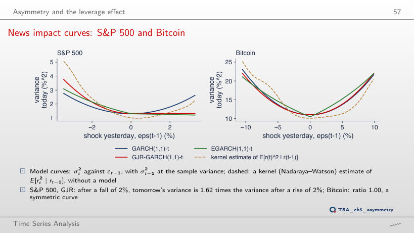
Answer
3.50 times, against 1.62 for a shock of 2%. The ratio grows with the size of the shock: the term γε² grows with the square of the shock, while βσ² does not depend on it. EGARCH gives 2.97; the kernel estimate only 1.41, because there are few days with falls of 4%. For Bitcoin the GJR ratio stays close to 1 (0.98).
Diagnostics and model choice
What GARCH removes
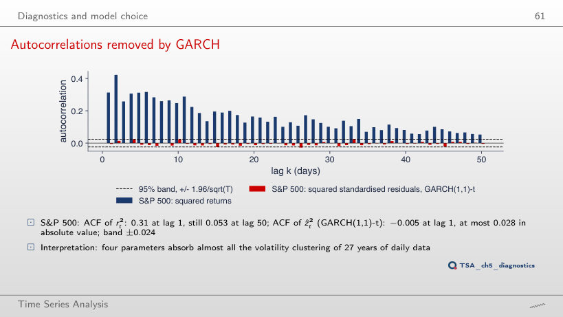
Answer
No. The value comes from a single day, 6 May 2025, with ẑ = 153.7, whose square dominates all autocorrelations. Without that day, Q(10) = 19.2 (p = 0.038): ARCH effects remain, which the test with all days does not separate from noise. For the S&P 500, excluding the largest |ẑ| (27 February 2007) changes the result little (13.6 → 14.2).
Variance forecasts and their evaluation
The term structure of volatility
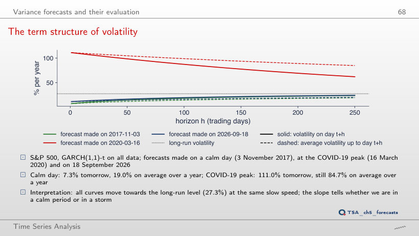
Answer
Larger: √(10 × 49.03) = 22.14% against √479.49 = 21.90%. On 18 September 2026 it was the other way round: 2.26% against 2.38%. In a crisis the forecast variance comes down towards the long-run level, so the square-root-of-time rule overstates; in a calm period it understates.
GARCH against EWMA, out of sample
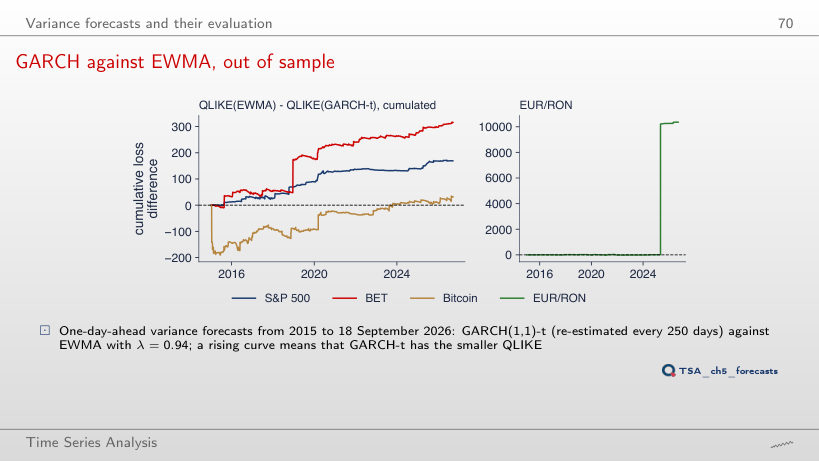
Answer
No: t = −1.32 (p = 0.187), against −1.02 (p = 0.310) with all days. The day of 6 May 2025 brought 98% of the total difference, and without it the mean QLIKE of the two models are close. For the BET, without 19 December 2018 the advantage of GARCH-t becomes clearer (t = −2.79, p = 0.005).
An application: VaR 1% from a GARCH model
VaR 1% through the COVID-19 crash
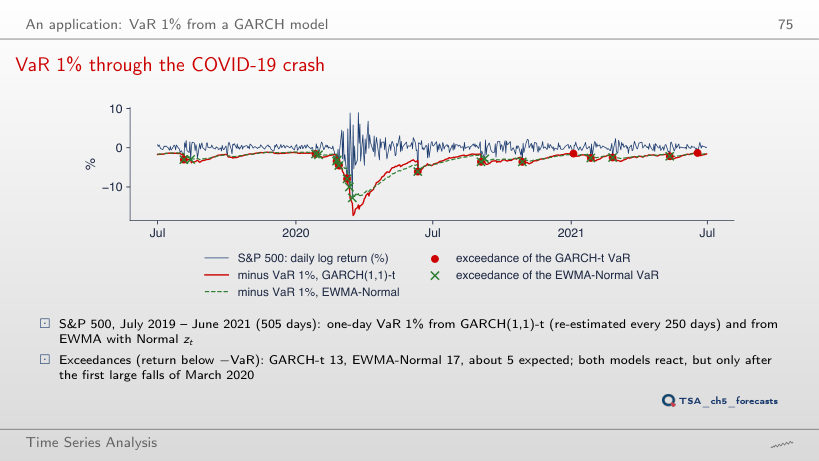
Answer
No: EWMA-Normal has 28, GARCH-t 32, against 25.3 expected. The 5% quantile of the standardised t with ν = 6.26 is −1.59, closer to zero than the −1.645 of the Normal distribution: heavy tails require larger quantiles only far in the tail. At VaR 1%: 13 GARCH-t and 17 EWMA-Normal exceedances (5 expected); at 0.5%: 7 and 16.
Daily log returns in %, up to 18 September 2026: S&P 500, BET and Bitcoin from the market data of the course (EODHD), EUR/RON from the BNR reference rate. The GARCH, GJR and EGARCH estimates are those of the lecture; the conditional volatilities are recomputed in the browser from the estimated parameters. Variants with parameters other than the estimates (α, β, λ, the VaR level, the interval coverage) use fixed parameters, not re-estimated. The simulated series use the Normal draws of the chapter’s seed; variants that do not appear in the lecture (other values of α, β or n) are extra runs of the chapter code with the same seed.